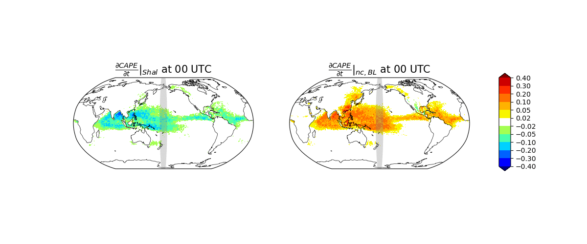
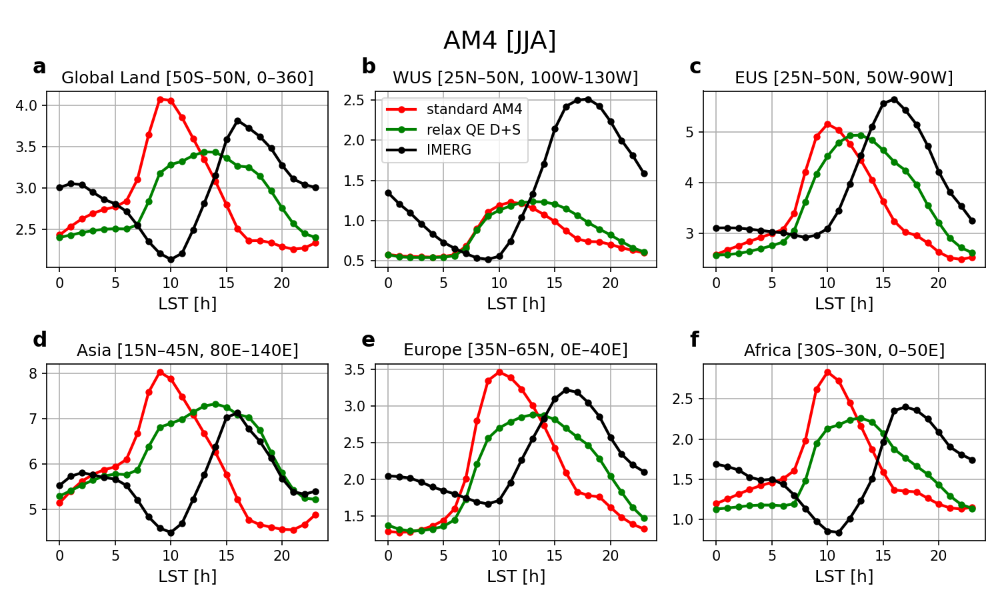

~3-Hour Delay
Peak land precipitation shifts later, closer to observed afternoon timing.
Model Development and Evaluation
JAMES (2024)
A non-equilibrium shallow-deep convective closure improves land precipitation diurnal phase and amplitude by better coupling CAPE buildup and convective release timing.
~3-Hour Delay
Peak land precipitation shifts later, closer to observed afternoon timing.
~50% Bias Reduction
Diurnal phase bias is reduced by about half compared with satellite references.
Targeted Improvement
Mean state and variability are only modestly changed outside the diurnal cycle.
Paper Citation
Zhang, B., L. J. Donner, M. Zhao, and Z. Tan, 2024: Improved precipitation diurnal cycle in GFDL climate models with non-equilibrium convection. Journal of Advances in Modeling Earth Systems, 16, e2024MS004315. https://doi.org/10.1029/2024MS004315
Can convection closure be reformulated so GCMs better capture observed subdiurnal land convection timing without degrading broader climate behavior?
The non-equilibrium closure augments deep-convective CAPE relaxation using shallow-convective CAPE tendencies to represent subdiurnal boundary-layer control.
\[ \left(\frac{\partial \text{CAPE}}{\partial t}\right)_{\text{deep}} = -\frac{\text{CAPE} - \text{CAPE}_0}{\tau} - \left(\frac{\partial \text{CAPE}}{\partial t}\right)_{\text{shal}} \]
Key Animation
Shallow-convective CAPE tendency (left) and non-convective boundary-layer CAPE tendency (right) largely cancel, delaying deep-convective peak timing over land.

Diagnostic Figure 1

Diagnostic Figure 2